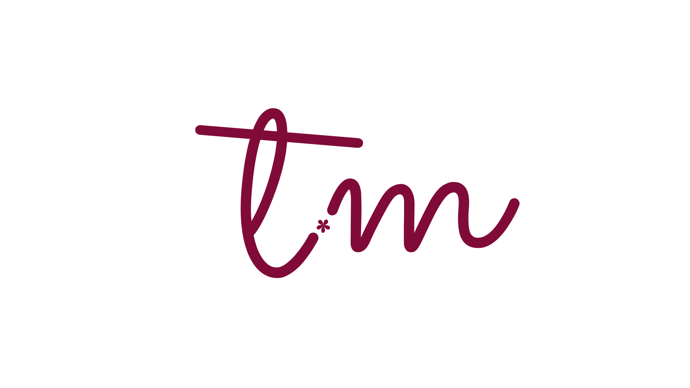

GestãoEstratégica
"Ideias precisamde direção."
Estratégia para transformar ideias em negócios bem posicionados, estruturados e reconhecidos. Diretora de Projetos Estratégicos do Connection Amigos do Turismo.
Conheça meus projetos e resultados.
Turismo, conexão e oportunidades.
Assista aos meus conteúdos e palestras.
Tire dúvidas e conheça meus serviços.
Vamos entender sua necessidade e construir o próximo passo.